立冬是冬天的开始。“冬”这个字很有意思，它的本义是终，表示终止的意思——“天地不通，闭而成冬”。
冬天是一年总结性的阶段，我们在这个阶段要反思一下，这一年有没有好好地保养自己的身体。假如您一年到头都忙忙碌碌的，亏待了自己的身体，那就要在冬天这个阶段来弥补一下，怎么弥补呢？主要就是补肾。
立冬之后进补，叫作补冬，因为天气马上就转冷了，得给身体添把火。
立冬之后的进补吃什么呢？首选就是羊肉。
在一年里边有两次吃羊肉的大日子，一次是冬至，一次就是立冬。在这两天吃羊肉，补肾的效果特别好。
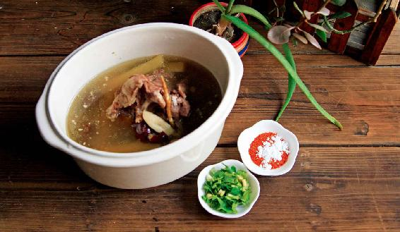
羊肉要怎么吃才能加强它补肾的效果呢？
在立冬这天，南方人讲究吃羊肉汤锅，北方人一般吃羊肉馅儿的饺子，当然这两种吃羊肉的方法都很不错。但是，我们要记住一点，不管怎么吃羊肉，一定要放胡椒粉。
每次讲到这儿，很多人都很惊讶：胡椒不是热性的吗？吃羊肉放胡椒粉难道不是火上加火吗？其实，我们对胡椒都有一点儿误解——如果我们喝羊肉汤不放胡椒粉，反而更容易上火。原因是什么呢？胡椒这种调料，虽然它也是辛辣、热性的，但是它跟葱、姜、蒜有一点不同，胡椒的热性是往下走的，它不往人体的上半部分走。
我们人体在什么时候是一个比较健康的状态呢？最好就是下半身暖暖的，而头部是清凉的，这样人就会很舒服。现在很多人都是上边有火，下边有寒，所以就很难受。
胡椒能把食物的热性导引到人体的下半部分，这个就叫作引火归原。它让人体宝贵的阳火回归到了本原，而本原就是人体的先天之本——肾脏系统。
如果您是身体比较虚寒的人，特别是一些畏寒的女性朋友，建议您煲汤时可以放一些胡椒粉，既能补肾，又能暖胃。特别是做一些偏凉的汤品（如萝卜汤、鱼汤）时，甚至一年四季都要在做汤时搁一点儿胡椒粉，因为它能起到温热的作用。所以，您不管是做凉汤还是热汤，都可以用到胡椒粉。
读者评论：喝羊肉汤后，大便开始成形了
幸福_pit ：几年了，每年立冬以后吃羊肉都放胡椒粉，全家人都很受益。
辉儿_12：我坚持喝羊肉汤，以前溏便，这两天大便开始成形了，放屁也不臭了。
吃素的朋友怎么样来补肾呢？我介绍一道凉菜和一道茶饮。
假如您是吃素的朋友，或者是您实在不喜欢吃羊肉，那怎么样来滋补肾阳呢？在绿色的蔬菜中，茴香菜温补肾阳的作用是很强的，比韭菜还要厉害。
茴香菜，北方的朋友一般是把它拿来做馅儿了，这样您就吃不太多。平时，我们把它当成蔬菜来直接食用也很不错。特别是在冬天的早上，用茴香菜来搭配粥吃，不仅补肾，还能开胃、散寒，可以预防初冬时受寒引起的感冒。
茴香菜的做法非常简单，1分钟就可以完成。
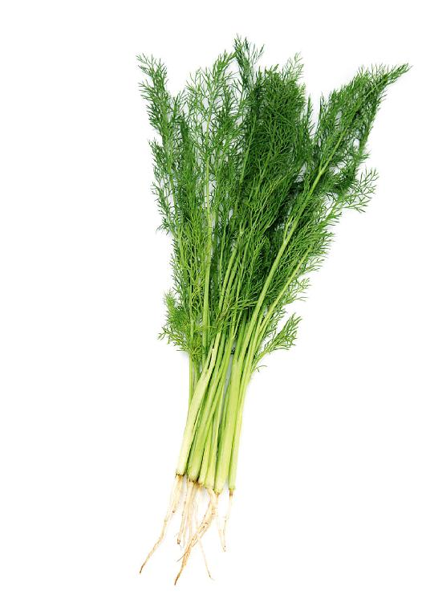
这道菜的功效是什么呢？可以补肾阳，可以暖脾胃，可以散风寒，还能够预防感冒。
凉拌茴香菜
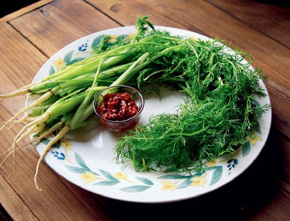
原料：
茴香菜、植物油、豆瓣酱（如果您怕辣可以换成黄豆酱）。
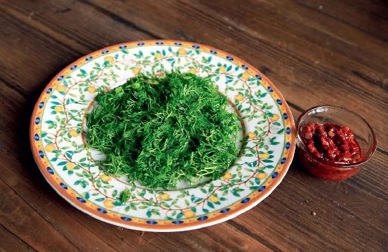
做法：
1.取新鲜的茴香菜，把嫩的部分切碎、装盘。
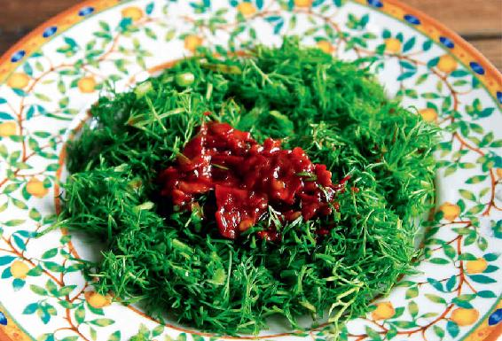
2.舀一小勺豆瓣酱，淋在切碎的茴香菜上。
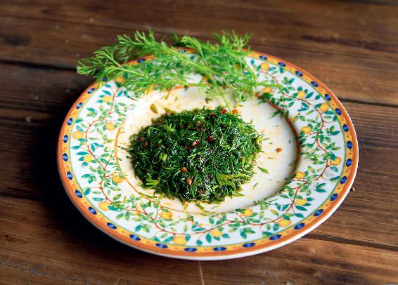
3.把加热好的少许热油浇在豆瓣酱上，然后用筷子快速搅拌均匀，这样就可以吃了。
允斌叮嘱：
一般我们在超市买的都是精炼过的熟油，稍微加热一下即可。如果是生菜籽油或茶籽油，那您就要多加热一会儿。
再讲一道补肾的茶饮——红香茶，里边有一样重要的原料就是小茴香。小茴香是茴香菜的种子，它温热的作用比茴香的叶子还要强一些。
小茴香是我们厨房里很常用的调料，也叫小茴香籽，它长得有些像孜然。现在我们觉得它很稀松平常，只是一种调料，但在古代，它却是一种珍贵的香料，所以古人把它叫作“怀香”。顾名思义，就是怀里揣着它，随身佩戴它，让衣服散发香气。有时候，人们还把它放进嘴里嚼一嚼来消除口气。
红香茶可以反复冲泡，直到泡到没味儿为止。
红香茶的功效是专门治寒，不论胃寒、子宫寒、小腹冷痛、手脚冰凉，喝这道茶都管用。平时比较怕冷的人，我特别推荐您喝这道红香茶。有一些血脂高的老年人，也可以喝这个茶。
红香茶
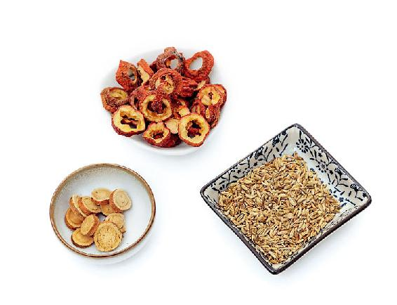
原料：小茴香9克，生山楂30克，甘草6克（这是一人一天的量）。
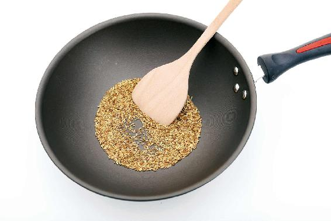
做法：
1.首先把小茴香放到一口铁锅里头，锅里别沾油，用小火炒上1～2分钟，等炒至焦黄出香味后马上关火。您可以一次炒出10～20天的量（90～180克），放到瓶子里，每天取一点儿出来用。
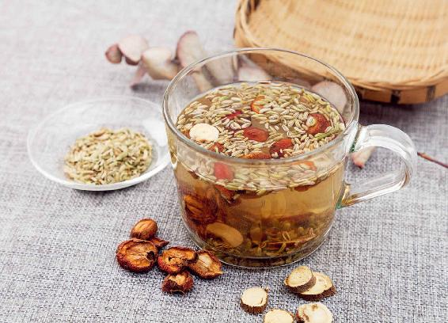
2.把炒过的小茴香和生山楂、甘草用沸水冲泡，闷20分钟代茶饮。
允斌叮嘱：
1. 生山楂只是一种中药名称，它其实是干的山楂，而不是新鲜的山楂，新鲜的山楂不太容易将药效泡出来。
2. 小茴香您在超市调料柜台可以买到，生山楂和甘草在药店和一些超市都能买到。
哪些人不太适合用小茴香呢？
记住：平时特别怕热的人、爱上火的人，比如，有口干、口苦、口舌生疮、牙龈肿痛、小便特别黄、大便干结的这些人，您暂时不要用。特别爱出汗的人也要少饮用红香茶。
还有一些朋友，虽然有胃病，但不是胃寒，而是胃热，这样的朋友也要少用小茴香。
读者评论：红香茶治胃寒，效果很好
小团圆：您的红香茶治胃寒，效果很好！后来 ，我往红香茶里加了颗冰糖，发现挺好喝的，很香，谢谢您。
允斌点评：加糖可以调和山楂的酸味，也更保护胃。有寒的人加红糖更佳。
延伸阅读：胃寒和胃热怎么鉴别呢？
在胃病发作的时候，如果吐出来的是清水，这是胃寒；如果吐出来的是酸水，那是胃热。另外，胃热的人还特别容易饿，虽然吃得很多，但身体吸收不到多少营养。
讲了补肾阳的汤，再给大家介绍一道补肾阴的汤，这道汤同样是全家老小都能喝的。
冬天是阴气盛的季节，我们要顺应天时来补阴。尤其是阴虚、爱上火的朋友，补阴的效果会很明显。
阴是什么？阴其实就是营养物质。而越是营养丰富的食物，越能养阴。如果我们想要达到持久养阴的效果，就要靠食物来养。
白果墨鱼汤就是一道很平和的养阴好物，虽然是大补，但一家老少都能喝。
假如您喝这道汤觉得很舒服，整个冬天都可以时常做一些来喝。
特别是经常熬夜的人，一定要多喝墨鱼汤。
熬夜其实是非常伤阴的。古人说：“一日熬夜，百日不复。”就是说，您熬了一个通宵，一百天都恢复不过来的。所以，我们熬夜之后，最好马上喝墨鱼汤弥补一下亏虚。
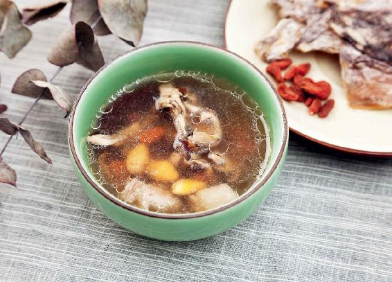
很多朋友怕吃肥肉，其实肥肉是好东西，它能滋阴润燥。如果您想要皮肤好，那就要吃肥肉。其实所有的食物都是好的，全看我们会不会吃。
在汤中加一点肥肉，汤味才会鲜甜。当然，您也可以用鸡肉、羊肉，这都没问题，但有一点得记住，汤里一定得要有一点油气，这样墨鱼吃起来才不会发苦。
至于枸杞、陈皮和生姜，您不需要根据家里的人数来严格地加倍。枸杞抓一大把都是可以的。煲汤用的生姜一定是要带皮的。
陈皮要注意一下，如果是自家用红橘剥皮晾晒的川陈皮，放一个就足够了；如果是在药店买的陈皮（一般是切成丝的），建议多放一些保证效果，大约要放十几克。由于各种陈皮品质不一，最好先取一些煮水尝尝味道怎么样，避免影响墨鱼汤的口感。
虽然这道汤很适合全家老小来喝，但是如果您家里有谁正在感冒，痰多、咳嗽，或者有其他什么急性病，请先不要喝。因为人有急性病时都不要忙着进补，而是要先排毒。还有，女性经期的时候注意不要喝得太多。
白果墨鱼汤
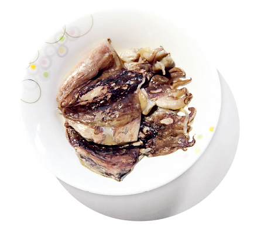
原料：白果7粒，墨鱼于1只，肥肉50克，枸杞20粒，陈皮1个，生姜3片。
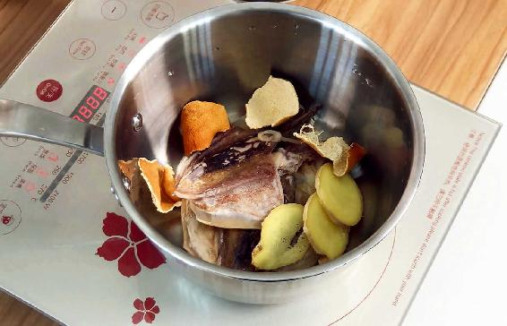
做法：
1.把墨鱼和白果提前一两小时用冷水泡发。
2.将泡发后的墨鱼和白果放入锅中，再放入其他配料和适量冷水，炖上一小时就可以喝了。
功效：
养血，滋阴，养胃，补气。
允斌叮嘱：
1. 白果养心，建议大家要经常吃，因为它有小毒，所以一个成年人一天可吃的量不要超过7粒，小孩子要减半，而且久炖比较好。
2. 墨鱼干不需要用太大的，如巴掌大小的墨鱼干，一个人一天吃1~2只正好。
3. 墨鱼要用荤油炖出来才香，所以要放一块肥肉，猪肉、鸡肉、羊肉等都可以。
对女性来说，墨鱼是妇科的一味良药。古人说它最宜妇人，是女性的好朋友。所以，我特别推荐女性朋友经常喝墨鱼汤，它对孕妇、产妇来说，更是一个好东西。
孕妇贫血是不能够随便补的，补多了会造成血热，所以孕妇补血最好是凉补，墨鱼汤就是首选。
产妇由于生产时失血过多会造成血虚，甚至阴虚。这个时候用墨鱼汤滋阴、养血也很合适，而且还有催奶的效果。
当然，墨鱼干是海鲜，但凡海鲜都有点儿发，如果在湿疹急性期，或者在其他过敏症的急性期，又或者有痛风的朋友，您吃墨鱼肉要谨慎。
但这里边有一个小窍门：在煲汤的时候，不要把墨鱼骨去掉，要把整个墨鱼直接下锅去炖。墨鱼骨是一味中药，也叫海螵蛸，有预防过敏的作用，它和墨鱼肉正好是互补的——墨鱼肉是通的，但墨鱼骨是收的，把两个炖在一起才能平衡。
等汤炖好了，墨鱼的肉和骨头也就分离了，起锅的时候，您把骨头给挑出来就行了。挑出来的墨鱼骨不要扔掉，留下来洗干净，晾干，可以当一种应急的外伤药用，以前的老年人都这么做——如果切菜时不小心把手指给切伤了，马上用小刀刮一点儿墨鱼骨粉，撒在伤口上就可以止血。用墨鱼骨粉来调理皮肤上的伤口，尤其是那种久不愈合、总是流黄水的伤口，效果是很好的。
墨鱼骨还能给牙齿美白。用墨鱼骨在牙齿上摩擦，可以清除牙齿表面的污垢。
读者评论：吃完白果墨鱼汤后，晚上睡得特别香
周小清：以前冬天只知道喝羊肉汤，听了陈老师的课后，立马买了白果、墨鱼来炖。汤喝起来鲜甜，喝了两天后气色就好了很多，真的很有用，感谢陈老师的分享！
水晶：今天煮了墨鱼汤，就是清煮的，汤非常好喝，墨鱼肉很嫩。不过墨鱼肉稍微有一点点苦，总的来说很好吃。
李玲：收到墨鱼干立刻炖了起来，汤非常香，肉也很好吃。
Donna：墨鱼干补肝血的效果真的好！去年这时候，眼睛痒得一直抠，太难受了。从霜降到立春前一天，每天一只墨鱼干，当时并没有全好，但是心无旁骛，每天坚持，今年效果出来了，杠杠的。
古文化之路：年年必吃的墨鱼，拯救干眼症的良药。
天使之爱：我喝白果墨鱼汤感觉非常好。原来入睡困难，半夜总醒，现在睡眠变得特好，早上有时闹铃都听不到。继续喝墨鱼汤！
大耳朵图图：我这两年到秋冬季节就喝墨鱼汤，月经不调、熬夜后的身体不适等都有了很好的改善。
风入画：十几年了手指甲没有月牙，今年冬天一周喝两次墨鱼汤，两拇指长出月牙了。惊喜啊!
Linda：养生小白一个，半信半疑第一次吃墨鱼干。这两周下班回家，断断续续吃了七次，最大的感受是吃完后晚上睡得特别香，很容易入睡。手指上的月牙也更多了，眼睛也没有那么干涩了。
A yuling：白果墨鱼汤，熬夜后喝真的十分管用。每天一碗墨鱼汤，不用担心熬夜导致的眼睛干涩、身体疲惫了，太好了。
静待花开：月经第一次没有提前，一直找不到原因，原来是因为喝了墨鱼汤，开心！
在路上：我也在喝白果墨鱼汤，身体比以前好了许多，感觉气不虚了。
Jessie易林：真的很管用！只喝了两次白果墨鱼汤，明显觉得不那么疲劳了，面色也红润多了。
Janice：连续几天睡不着，真的有效果，一觉睡到天亮，后脚跟也不痒了。
lian：我用清水炖墨鱼干隔一天吃一次，有时隔两天，最近我的老花眼好一些了。
路路宝妈：墨鱼汤一直在喝，已经吃了三袋墨鱼干了。这个冬季我没觉得冷过，这是之前从来没有过的。
允斌解惑：喝了白果墨鱼汤会生热吗？
静心感悟：湿热体质的人喝了白果墨鱼汤会生热吗？
允斌：不会，墨鱼是滋阴的。
芊芊：白果墨鱼汤加一块鸡肉特别好喝！请问可以再加一块花胶进去吗？
允斌：可以的。
SU：墨鱼身上那层黑色的薄膜要不要撕掉？谢谢！
允斌：不要撕掉，留着。
黑子娘：立春后还能喝墨鱼汤吗？
允斌：可以喝，但不是春季饮食重点，可以在熬夜后喝。
紫藤：哺乳期可以喝白果墨鱼汤吗？
允斌：墨鱼是通乳汁的，可以多吃。
思小妍：孕妇可以喝白果墨鱼汤吗？墨鱼汤补气血的效果真的非常好，喝了几次，手指上的小月牙都有明显变大。
允斌：可以吃，而且很适合吃。
关于立冬之后吃什么补肾，我讲了胡椒羊肉汤、茴香菜、红香茶和白果墨鱼汤。有的朋友可能会纠结，那我阴阳都想补该喝什么汤呢？
您不妨把两道汤交替着来喝，比如，今天喝胡椒羊肉汤，明天喝白果墨鱼汤。您也可以把羊肉和墨鱼一起来炖，阴阳平衡也是不错的。一般来说，在立冬节气，大多数人是适合两样都补的。
有的朋友可能分不清到底自己是需要补肾阳还是补肾阴。那怎么办呢？我教您一个小窍门：阳虚的人往往怕冷，而阴虚的人往往怕热，特别是在晚上，会觉得手脚心发热，这种热不是吹空调就能解决的，而是从身体里面透出来的热。
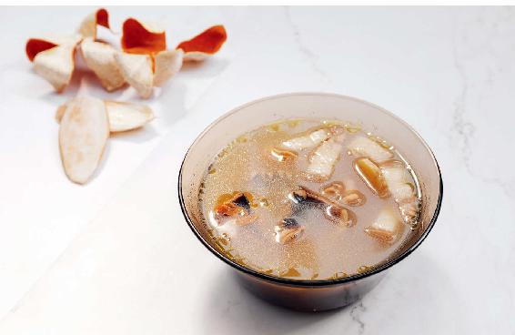
如果您是一个平时怕冷的人，就多喝一些补肾阳的汤；如果您是一个平时怕热或者容易上虚火的人，可以多喝一些补肾阴的汤。但不管您是偏阳虚，还是偏阴虚，在立冬节气的十五天当中，最好是把阴阳都补到。因为“孤阴不生，独阳不长”，单独补阴或者单独补阳，补肾的效果都是不够好的。
古代的医家特别给我们留下一句话，叫作“善补阳者，必于阴中求阳，则阳得阴助而生化无穷；善补阴者，必于阳中求阴，则阴得阳升而泉源不竭”。所以，我们在用饮食补肾的时候，也要注意阴阳双补，这样才能达到阴生阳长的境界。
读者评论：天天都有好吃好喝的，不亦乐乎
鲜丰大冷面护心肉锅：感谢老师带给我们这么多美味又健康的食方！昨天羊肉汤、茴香饺子、红香茶！今天墨鱼白果汤、陈皮荷叶茶，每天都有好喝的，不亦乐乎。